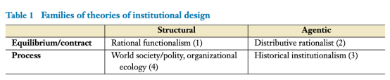

收录于合集 #理论研究 96个

作品简介
【作者】
埃里克·富滕（Erik Voeten）：美国乔治敦大学埃德蒙·沃尔什外交服务学院副教授，主要研究领域为国际制度和法律在国际事务中的作用。他是期刊《国际组织》的编辑，并在《华盛顿邮报》“猴子牢笼”(Monkey Cage)专栏发表有关国际关系的评论文章。
【编译】 柯孜凝（国政学人编译员，复旦大学国际关系与公共事务学院）
【校对】 姚寰宇
【审核】 李博轩
【排版】 杨洋
【来源】
Voeten, E. (2019). Making sense of the design of international institutions.
Annual Review of Political Science. 22,147-163.
期刊介绍
《政治学年度评论》自1998年以来出版以来，内容涵盖了政治学领域的重大议题，包括政治理论和哲学、国际关系、政治经济学、政治行为、美国和比较政治，公共管理和政策以及方法论等。根据2018年期刊引证报告显示，其影响因子为3.915，在政治科学类期刊中排名第六。
理解国际制度设计 ****
Making Sense of the Design of International Institutions
Erik Voeten
内容提要
国际制度设计在很多方面存在差异：制度可以是正式的、弹性的、独立的、明确的、包容的、集权化的等等。这篇文章辨析了不同理论对制度设计理解存在的相似与差异。首先，一些理论关注于议价或契约过程对均衡行为的构建，另一些则从动态过程理解制度设计；其次，不同理论对制度设计的回应对象存在分歧：制度设计是对其运转环境的回应还是对行为体创造制度的激励、利益、价值、倡议和强权运转的回应。基于以上两个维度，作者对各理论进行分类，并讨论了四种理想的理论：理性功能主义（
rational functionalist ）、分配理性主义（ distributive rationalist ）、历史制度主义（
historical institutionalist ）以及结构过程理论（ structural process theories
）。这些理论路径验证了导致制度设计不理想或功能失调的原因：国内政治、权力政治、路径依赖和文化。最后作者总结了这些理论如何帮助我们理解现行制度设计面临的挑战。
文章导读
作者对国际制度的思考始于一系列对当前国际现象的追问。为什么国际制度和组织的形态是当前的模样？为什么尝试监管全球金融的新制度大多是基于软法的非正式机制，而不是正式的国家间政府组织？为什么改革联合国安理会（UNSC）组成及其成员投票权的规则如此困难？为什么在气候变化的制度化合作方面没能通过有约束力的多边协议并建立一个集中的政府间组织？为什么国际法院有解决某些法律争端的权力，却无法解决其他法律争端？制度设计可以解释国际制度的外部反抗力吗？
作者认为要理解这些现象，需要通过两个维度去衡量制度设计中存在的相似与差异以及一致与变化。
第一重维度对理论的划分在于制度设计如何整合驱动力(incorporate dynamics )。
大多数理性理论将制度视作是引发均衡行为的诱因。这些理论主要关注创造制度的行为体（主要是国家）之间离散的议价或契约（条约）。另一些理论则认为制度设计源自创造新行为体、利益和认同的动态过程。
第二重维度反映了社会科学理论中的结构-能动（structure-agent）理论。
结构路径认为制度设计是对制度运转中的策略、社会、文化、政治或经济环境的回应。
相反，能动路径强调制度设计是行为体创造制度的激励、利益、价值、倡议和权力的结果。

理性功能主义假定，制度设计反映了对制度旨在解决的功能和策略问题的理想回应。分配理性理论则强调制度是强国基于偏好塑造互动的过程中带来的副产品。二者的分野在于其是将制度作为解决问题的有效方案还是行为体实现自身利益的手段。历史制度主义理论强调过去的制度化和相互依赖创造了影响制度设计的新的行为体、利益、激励和限制。世界政体理论强调制度设计源自制度运作时的文化、政治和社会环境。 这些理论将我们的视线引到了关于制度设计无效或不理想的不同原因上。 理性功能主义强调国内政治是未实现理想制度的重要源泉。分配理性主义认为不理想的结果源于强国追求自我利益的实现而不是追求社会理想结果的达成。历史制度主义强调路径依赖通常导致制度设计的无效性。结构过程理论认为制度设计的不理想源于文化因素。
一、 理性功能主义理论 ****
理性设计（Rational design）认为国家通过制度设计有效地解决妨碍双赢合作实现的策略性问题(Koremenos 2001a) 。 这种设计运用博弈论推测因变量和自变量之间的关系，其中自变量是合作问题，包括了资源分配、强制执行和不确定性。因变量是制度设计特征，如集权化的水平，会员资格，规模，控制机制及弹性。例如当国家对世界不确定时，他们可以共同收集汇总信息，而更加集权化的制度有利于解决执行问题(Koremenos2001a)。理性设计推测，存在严重执行和信息问题的国家可以从集权制度中共同受益，因此，当战略合作问题日益严重时，我们应该建立集权制度。芭芭拉·凯里迈诺斯(Barbara Koremenos)认为可以通过制度旨在解决的深层次合作问题理解制度设计的不同。更多关于理性设计的研究后来居上，超越了理性设计的初始假设。这些研究并不将国际制度视作对国际合作问题的有效回应。近来，学者们对理性设计的贡献主要集中在四个方面。首先，学者们意识到国际制度不仅解决国家间的合作问题，也解决某些国内政治问题。如期货交易制度（PTA）帮助民选政府推进国内政治一体化(Mansfield 2007, 2002)。但旨在解决国内政治问题的制度设计并不必然提高国际性的社会福利，而国内政治可以解释这一结果的不理想之处(Fearon 1998)。其次，学者们开始在委托-代理模型（ principle-agent models ）中加入主权成本的衡量(Abbott & Snidal 1998, Hawkins 2006, Pollack 1997)，也就是说国家在委托权威的时候需要让渡部分主权。各国家会权衡参与国际关系等级制的治理成本与制度提供的利益之间的关系(Lake 2009)。国际非政府间组织进入国际政府间组织机会的变化部分是由于国家对主权的考量(Tallberg 2014)。委托代理问题说明了国际政府间组织并不只是解决问题的机制，他们有自己想要实现的目标。再次，学者们将理性模型延伸，将社会化和说服作为一种国际制度的功能。当我们将国际制度视为社会环境时，最佳制度设计的理论会有所不同（Johnston 2001）。最后，理性设计理论开始将国家间不同的偏好和能力涵盖进来。Hooghe等人认为其设计理论是“后功能主义”，能更好地考虑行为体的偏好(2017, 2016)。同样，Koremenos试图通过理性设计理论解决权力不对称和国家偏好的问题(2001b)。这些分析回应的是对功能主义分析方法中去除政治因素的批评。学者们在他们的分析中整合了分配政治的某些理论，但是他们的理论仍假定制度设计源自制度应解决的共同战略性问题。
二、 分配理性主义理论 ****
在国内制度的研究中，分配主义和功能主义理论通常存在差异(Gilligan & Krehbiel 1987, Weingast & Marshall 1988)。在理性功能主义看来，分配是一个制度设计能够解决的问题。功能主义认为制度设计的分配问题是制度如何实现最优分配。相反，分配主义始于对谁能从制度中受益和它们能通过什么手段获得这些利益的追问。这一核心问题是对理性功能主义认为国家设计制度旨在增进共同利益的观点的反驳(Koremenos et al. 2001a)。 分配理性主义认为任何行为体的目标都是增加自身利益并将运用权力实现这一目标。 **** **与现实主义相反，分配理性主义并不认为国际制度不重要，他们认为制度由权力政治塑造并塑造权力政治(Gruber 2000) 。**例如Oatley和Nabors通过证明美国在谈判该协议时利用其金融市场力量将收入重新分配给美国银行，从而对巴塞尔协议的功能解释提出质疑(Oatley&Nabors 1998)。 **** 分配主义的关键概念在于议价能力（bargaining power），这并不直接反映到物质能力上。 重要的是某些国家比其他国家拥有更多的选择(Gruber 2000, Lipscy 2015, Voeten 2001)。有能力不通过合作就实现其目标的国家可以利用这种能够进行单边行动的能力来塑造多边制度规则。分配问题也影响了国家接受国际制度独立权威的意愿。如在国家没有能力单边毁约的情况下，国家更倾向于多数同意规则（让渡主权）(Maggi & Morelli 2006)。即使认为制度设计产生自有着多样偏好和能力的行为体议价过程中，也必须考虑到不确定性。任何议价的分配问题都涉及多重均衡，即过去的制度可以影响议价过程使之达成均衡。那么，这些制度从何而来？又是什么使得他们有自我实施的能力？分配理论应该关注历史和过程而不仅仅是个人议价，任何战略选择理论都应该明晰被这些互动是什么，也要承认历史因素塑造了界定互动的行为体、报偿和选择(e.g., Lake & Powell 1999)。也就是说理性主义需要假设行为体、利益、选择和信息集都被明确界定，这意味着互动的某些方面要被认为是外生的，然而基于过程的理论则挑战了这一路径。
三、 基于过程的理论：历史制度主义 ****
通过检查制度化过程理解制度设计的想法并不新奇，它是功能主义和新功能主义的根源。历史制度主义也认为只有检验制度化的过程才能够理解制度设计(Haas 1964, Mitrany 1944) 。约翰 · 伊肯伯里(G. John Ikenberry)是将历史制度主义用于分析国际制度设计的著名学者。他认为二战后，美国有动机依照其偏好进行制度设计，但同时这些制度设计又限制了其利用非对称能力获得瞬时优势的能力(Ikenberry 2009)。制度的粘性( stickness )锁住了美国的瞬时优势，因为制度并不能适应频繁的相对权力变化，也通常不是反映当下合作的最佳方案。 历史制度主义强调制度设计的时间和次序，因为过往的制度会塑造新制度的限定和可能性。 历史制度主义强调了制度性发展可能会导致路径依赖的四种方式：锁定权力对比、积极的反馈效应、递增的收益和自我加强特性(Fioretos 2011)。在此情况下，制度之外的参与者会根据现行制度调整其活动和期望，从而使其他制度设计的可能性降低。结果是制度设计反映了一个历史过程，不一定能对制度应该解决的功能性问题做出最佳回应 **历史制度主义的局限性在于如果制度是一种“过程”（processes）或“轨迹”（trajectories），且不会形成最终结果，那么我们将永远无法确认输家和赢家，因为制度发展的每个阶段都不过是前序制度的高潮和后序制度的跳板。用这种逻辑判断相对权力可能会显得混乱，因为权力在某种程度是总是过往制度发展的产物，并可能会随着时间的推移发生重大变化(Farrell &Newman 2014)。**但回到分配主义的角度，如果我们要了解制度设计是如何形成并由分配政治塑造的，必须认真对待时间和顺序。但是，将现有结构作为外来结构来分析特定的制度环境仍然可能是有益的，学者们必须在选择方法时进行权衡。
四、 基于过程的结构理论 ****
**基于过程的结构理论强调国际制度在全球文化、政治和社会环境的运转中被环境通过压迫性的、规范性的和模仿的同构过程（isomorphic processes）塑造(Boli & Thomas 1997, DiMaggio & Powell 1983, Finnemore 1996, Meyer et al. 1997)。**这一理论与理性功能主义和分配理性主义的观点大不相同。结构过程理论认为在制度设计与合作问题或行为者权力间不存在必要的联系，相反，制度设计与样式( templates )、全球规程( global scripts )或其他同构过程有关。与历史制度主义一样，结构过程理论也强调过往的制度如何塑造新的制度设计。但历史制度主义主要关注现行的制度如何塑造行为体的选择和策略，而结构理论不考虑这些带有目的性的行为，这使得结构理论在解释制度设计中的功能失调（ dysfunctionalities ）时走了另一条不同的路径。作者在此总结了其他三种值得关注的的结构理论。第一种是结合网络理论（ network theory ）和网络分析（ network analysis ）进行分析世界政体结构( structure world polity )的理论，旨在解释政体的组织结构，如世界政体为何变得碎片化(Beckfield 2010,2003; Busch 2007; Greenhill & Lupu 2017; Hafner-Burton & Montgomery 2006)。第二种运用了组织生态学( organizational ecology )的路径探究组织结构如何发展以回应环境变化，如私人跨国监管组织的兴起( Hannan 2005; Hannan & Freeman 1984, 1977)。第三种是实践理论( practice theory )，关注影响多边外交的非正式规则以及如何在特定情况下进行多边外交(Adler 2008; Adler & Pouliot 2011; Adler- Nissen 2012; Bourdieu 1977; Pouliot 2016, 2008)。
五、结 论 ****
以上四种理论都阐明了制度设计的一种重要方面，并给我们提供了思考制度设计失灵的不同视角，它们将这一问题归因于国内政治、权力政治、路径依赖和全球或地区文化。
然而仍然有一些问题的答案并不明确，如制度设计如何回应民粹主义这类国内政治压力？制度设计如何回应国家相对权力的变化？欧盟这般的制度如何因应对这些挑战而偏离既定轨道？文化和社会改变是否重写了制度设计的规程？作者认为民粹主义的发展可能改变民主国家使自身融入国际制度中的动机。许多理论认为大众看重国际法和国际合作能提供之物，如对于人权的更大承诺。但如果大众观念朝着相反的方向发展呢？我们可以发现那些促进自由价值的制度在民主国家中变得越来越不讨喜。另一方面，我们并不清楚民粹主义是否提供了一个形成国家联合的良好基础。那么，民粹主义者是否可以成功实现制度转型或设计一个新的制度？又或者，民粹主义是否会导致偏离现存制度？崛起国家也对现存制度设计存在不满。一些崛起国家想要提升本国在现存制度或设计新制度中的话语权。例如，从功能主义视角，我们可以将亚投行是作为对亚洲金融基础设施的问题的回应；从分配主义视角，我们可以将其视为崛起的中国对世界银行中的中国话语权的不满足。但如果要更全面的理解亚投行的制度设计，我们必须要解释为什么它的制度设计与现行的发展银行如此相似。也就是说，我们要考虑到国际和国内的分配政治在制度框架下的议价以及这种议价过程是如何被过去的制度和现存的文化、社会规则塑造。
这并不意味着我们需要创设出一套折中（eclecticism）的理论来综合所有表1（见前文）中的观点，因为它们在逻辑上是不一致的。真实的理论不因该囿于这一分类表格，但对于如何混合和匹配这些理论确实存在着逻辑上的局限。
理论家应该对自身理论与其他理论的假设、边界和局限有着深刻的认识。
没有任何一种观点能够媲美理性功能主义在可验证性和普适性方面的优点，而它也提供了关于制度设计的规范性基准。但理性功能主义并不能解释某些特定情境下的制度设计。因此，理论应当根据经验的差异进行明晰的解释，以提出更系统的理论。制度设计并不能够完美解决战略性合作问题，它涉及深层次的政治因素，制度面临的挑战也是如此。因此，我们需要更关注国内和国际分配政治的研究。
_ ** _ ** _ ** _ 本文由国政学人独家编译推荐**__
扫下方二维码查看往期精彩
【新刊速递】第01期 | Review of International Studies Vol.45, No.4, 2019
【新刊速递】第02期 | International Relations Vol.33, No.3, 2019
【新刊速递】第03期 | International Organization Vol.73, No.3, 2019
【新刊速递】第04期 | World Politics, Vol.71, No.4, 2019
【新刊速递】第05期 | European Journal of International Relations
【新刊速递】第06期 | Security Studies, Vol.28, No.4, 2019
分类导览 1
分类导览 2

点“在看”给我一朵小黄花